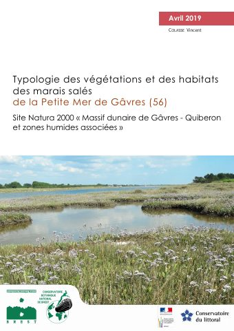

Typologie des végétations et des habitats des marais salés de la Petite Mer de Gâvres (56)
Télécharger le rapport (PDF) ↗Relevé n°1
En-tête d'un bordereau de terrain : ces informations situent le relevé (qui, quand, où) et le rendent exploitable par quelqu'un d'autre que vous. Le numéro est attribué automatiquement selon la position sur le transect.
Espèces observées
Si une espèce n'est pas reconnue, elle peut quand même être ajoutée (pour mémoire, sans effet sur le score).
Cortège saisi (0)
Comment lire ces résultats ?
Chaque habitat possède des espèces caractéristiques : des espèces qui, à elles seules, permettent de le reconnaître (comme un indice qui ne trompe pas). Les habitats ci-dessous sont classés selon le nombre d'espèces caractéristiques de votre relevé qu'on retrouve effectivement dans chacun — c'est le chiffre en gros (ex. 3/3). L'indice global (en %) affine ce classement en tenant compte aussi des espèces compagnes et de leur abondance.
✓ espèce caractéristique trouvée · ✓ espèce compagne trouvée · ✗ espèce caractéristique attendue mais non observée.
La zonation, de la vasière à la dune
D'après les profils de végétation relevés sur le site (Fig. 6, COLASSE 2019). L'ordre réel varie localement selon la topographie.
Mes transects
Tout est enregistré uniquement sur cet appareil (hors-ligne). Exportez régulièrement pour ne rien perdre.
Fichier au format du gabarit d'import CSV de Phytoscope (bouton "Importer" sur son écran d'accueil) : chaque relevé est ajouté comme nouveau relevé, sans jamais écraser ceux déjà présents. Les espèces non référencées ne sont pas incluses (Phytoscope ne peut résoudre que des taxons connus).